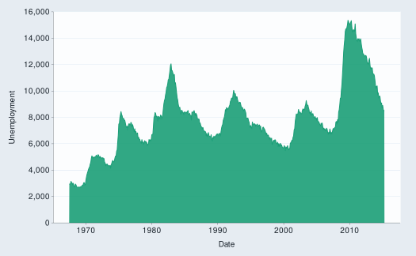

Create an area ggplot with a wrapper around ggplot2::ggplot() + geom_area().
Usage
gg_area(
data = NULL,
...,
stat = "align",
position = "stack",
coord = ggplot2::coord_cartesian(clip = "off"),
mode = NULL,
x = NULL,
xmin = NULL,
xmax = NULL,
xend = NULL,
y = NULL,
ymin = NULL,
ymax = NULL,
yend = NULL,
z = NULL,
col = NULL,
facet = NULL,
facet2 = NULL,
group = NULL,
subgroup = NULL,
label = NULL,
text = NULL,
sample = NULL,
mapping = NULL,
x_breaks = NULL,
x_expand = NULL,
x_expand_limits = NULL,
x_labels = NULL,
x_limits = NULL,
x_oob = scales::oob_keep,
x_position = "bottom",
x_label = NULL,
x_transform = NULL,
y_breaks = NULL,
y_expand = NULL,
y_expand_limits = NULL,
y_labels = NULL,
y_limits = NULL,
y_oob = scales::oob_keep,
y_position = "left",
y_label = NULL,
y_transform = NULL,
col_breaks = NULL,
col_drop = FALSE,
col_expand_limits = NULL,
col_labels = NULL,
col_legend_ncol = NULL,
col_legend_nrow = NULL,
col_legend_rev = FALSE,
col_limits = NULL,
col_oob = scales::oob_keep,
col_palette = NULL,
col_palette_na = NULL,
col_rescale = scales::rescale(),
col_steps = FALSE,
col_label = NULL,
col_transform = NULL,
facet_axes = NULL,
facet_axis_labels = "margins",
facet_drop = FALSE,
facet_labels = NULL,
facet_layout = NULL,
facet_ncol = NULL,
facet_nrow = NULL,
facet_scales = "fixed",
facet_space = "fixed",
title = NULL,
subtitle = NULL,
caption = NULL,
label_to_case = snakecase::to_sentence_case
)Arguments
- data
A data frame or tibble.
- ...
Other arguments passed to within a
paramslist inlayer().- stat
A statistical transformation to use on the data. A snakecase character string of a ggproto Stat subclass object minus the Stat prefix (e.g.
"identity").- position
A position adjustment. A snakecase character string of a ggproto Position subclass object minus the Position prefix (e.g.
"identity"), or aposition_*()function that outputs a ggproto Position subclass object (e.g.ggplot2::position_identity()).- coord
A coordinate system. A
coord_*()function that outputs a constructed ggproto Coord subclass object (e.g.ggplot2::coord_cartesian()).- mode
A
*_mode_*theme (e.g.light_mode_t(),grey_mode_r(), ordark_mode_r()). This argument adds the theme with side-effects, as thegg_*function will removes selected gridlines/axis-line/ticks. To avoid these side-effects,+the theme on to the output ofgg_*.- x, xmin, xmax, xend, y, ymin, ymax, yend, z, col, facet, facet2, group, subgroup, label, text, sample
An unquoted aesthetic variable.
- mapping
A set of additional aesthetic mappings in
ggplot2::aes(). Intended primarily for non-supported aesthetics (e.g.shape,linetype,linewidth, orsize), but can also be used for delayed evaluation etc.- x_breaks, y_breaks, col_breaks
A
scales::breaks_*function (e.g.scales::breaks_*()), or a vector of breaks.- x_expand, y_expand
Padding to the limits with the
ggplot2::expansion()function, or a vector of length 2 (e.g.c(0, 0)).- x_expand_limits, y_expand_limits, col_expand_limits
For a continuous variable, any values that the limits should encompass (e.g.
0). For a discrete scale, manipulate the data instead withforcats::fct_expand.- x_labels, y_labels, col_labels, facet_labels
A function that takes the breaks as inputs (e.g.
\(x) stringr::str_to_sentence(x)orscales::label_*()), or a vector of labels (Note this must be named forfacet_labels).- x_limits, y_limits, col_limits
For a continuous scale, a vector of length 2 to determine the limits of the scale. For a discrete scale, manipulate the data instead with
factor,forcats::fct_expandorforcats::fct_drop.- x_oob, y_oob, col_oob
For a continuous scale, a
scales::oob_*function of how to handle values outside of limits. Defaults toscales::oob_keep.- x_position, y_position
The position of the axis (i.e.
"left","right","bottom"or"top").If usingy_position = "top"with a*_mode_*theme, addcaption = ""orcaption = "\n".- x_label, y_label, col_label
Label for the axis or legend title. Use
+ ggplot2::labs(... = NULL)for no title.- x_transform, y_transform, col_transform
For a continuous scale, a transformation object (e.g.
scales::transform_log10()) or character string of this minus thetransform_prefix (e.g."log10").- col_drop, facet_drop
For a discrete variable, FALSE or TRUE of whether to drop unused levels.
- col_legend_ncol, col_legend_nrow
The number of columns and rows in a legend guide.
- col_legend_rev
TRUEorFALSEof whether to reverse the elements of a legend guide. Defaults toFALSE.- col_palette
A character vector of hex codes (or names) if not ordinal. Or otherwise a
scales::pal_*()function.- col_palette_na
A hex code (or name) for the colour of
NAvalues.- col_rescale
For a continuous variable, a
scales::rescale()function.- col_steps
For a continuous variable,
TRUEorFALSEof whether to colour in steps. Defaults toFALSE.- facet_axes
Whether to add interior axes and ticks with
"margins","all","all_x", or"all_y". Sometimes+ *_mode_*()may be needed.- facet_axis_labels
Whether to add interior axis labels with
"margins","all","all_x", or"all_y".- facet_layout
Whether the layout is to be
"wrap"or"grid". IfNULLand a singlefacet(orfacet2) argument is provided, then defaults to"wrap". IfNULLand both facet and facet2 arguments are provided, defaults to"grid".- facet_ncol, facet_nrow
The number of columns and rows of facet panels. Only applies to a facet layout of
"wrap".- facet_scales
Whether facet scales should be
"fixed"across facets,"free"in both directions, or free in just one direction (i.e."free_x"or"free_y"). Defaults to"fixed".- facet_space
When the facet layout is
"grid"and facet scales are not"fixed", whether facet space should be"fixed"across facets,"free"to be proportional in both directions, or free to be proportional in just one direction (i.e."free_x"or"free_y"). Defaults to"fixed".- title
Title string.
- subtitle
Subtitle string.
- caption
Caption title string.
- label_to_case
A function to format the default
x_label,y_labelandcol_labelof unlabelled variables. Defaults tosnakecase::to_sentence_case.
Examples
library(ggplot2)
library(dplyr)
set_blanket()
economics |>
gg_area(
x = date,
y = unemploy,
y_label = "Unemployment",
)
